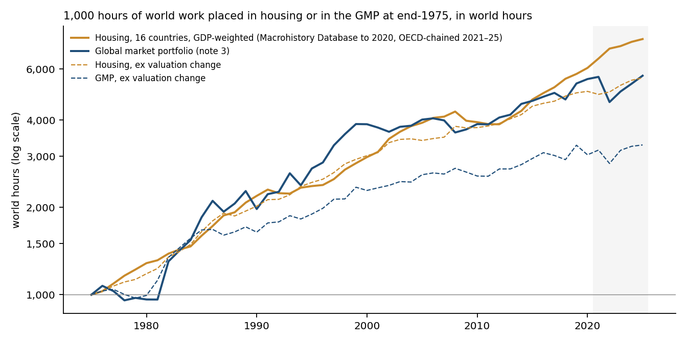
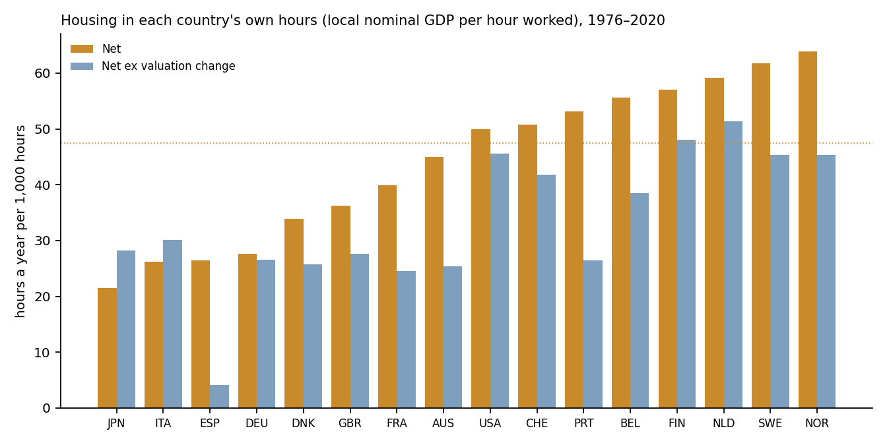
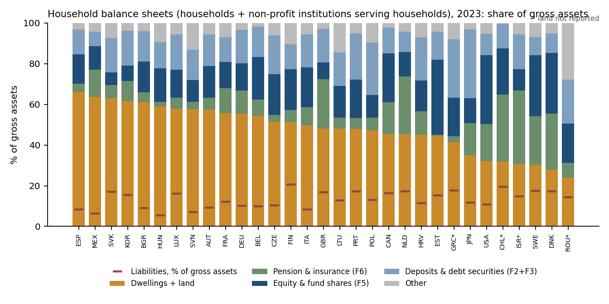
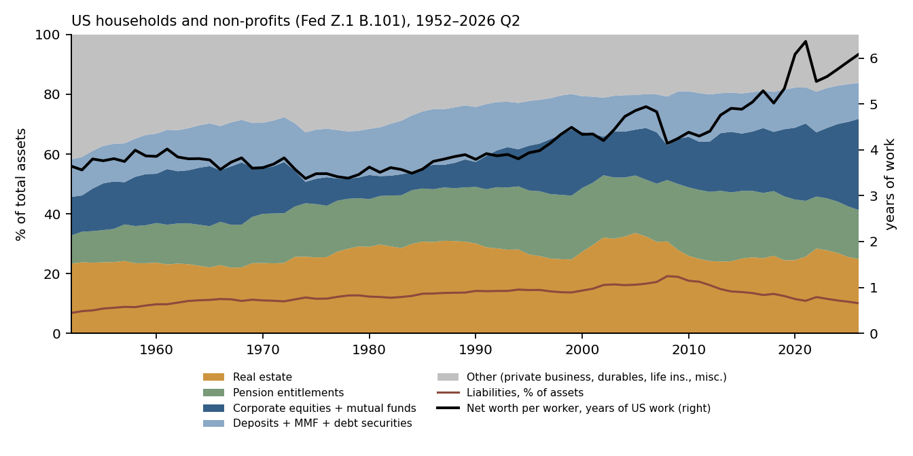
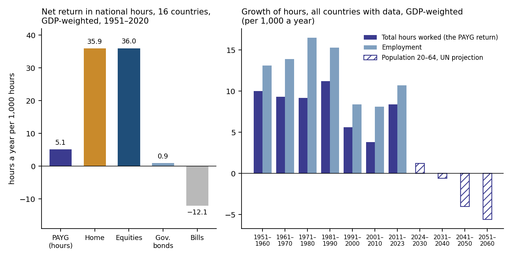
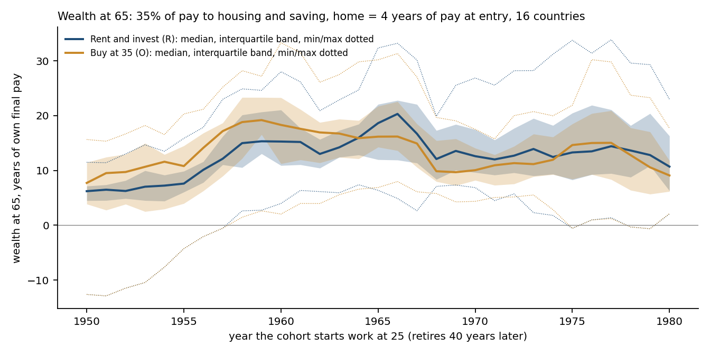
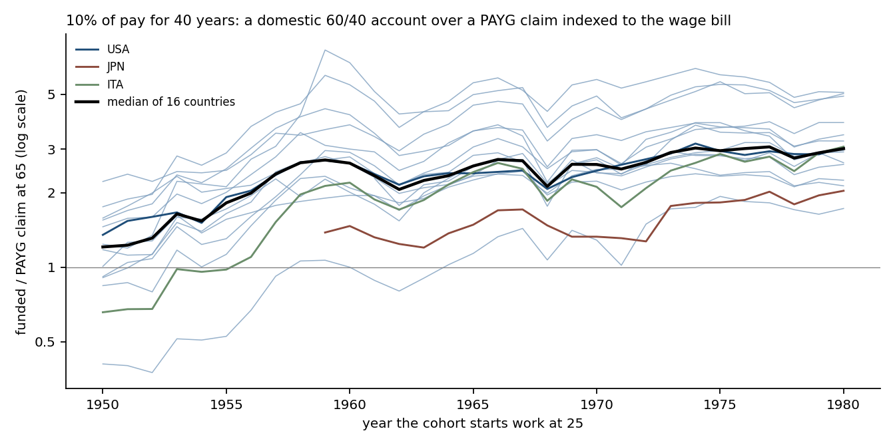

The household balance sheet measured in hours of work. Research note, v1.0, 21 October 2026. Keisuke Nakanishi.
This is a review-style note intended for open publication, not a journal submission. All series were built by the author from free public data: the Jordà–Schularick–Taylor Macrohistory Database, OECD analytical house price indicators and household balance sheets, the Federal Reserve’s Financial Accounts of the United States (Z.1), Eurostat’s national-accounts pension table, the Penn World Table, the World Bank, the UN World Population Prospects, BIS exchange rates and FRED, together with the frozen engine and the world hour behind the first three notes. No third-party proprietary data is redistributed, no index-vendor data is used, and no tables or figures from other publications are reproduced. Generative AI tools (Claude, Anthropic) were used for drafting, editorial review and writing analysis code, and as a discussion partner in analysis design. The author specified the questions, reviewed and ran all code, checked the outputs against the source data, and is responsible for all results. The analysis is exploratory: it was not pre-registered, and it was run with the results visible; the life-cycle design was corrected once after seeing results (Section 7). Sections 4–7 were each checked by a separate script written before reading the code that produced them. SSRN identifier: 7646578 (doi:10.2139/ssrn.7646578). Code and derived data: https://github.com/thecapitalcensus/working-life-holds.
Licence: the text of this note, as published on this site, is CC BY-NC-ND 4.0; any SSRN posting is governed by SSRN’s terms, with copyright retained by the author. The Macrohistory Database is used under its CC BY-NC-SA 4.0 licence (non-commercial, share-alike, cited as its authors require): every series derived from it here — including housing returns and rent yields, equity, bond and bill returns, the national hour before 1961, the stylised lives of Section 7 — can be released only on those same terms and is not offered under any commercial licence. The Penn World Table, World Bank and Eurostat data are used under CC BY 4.0, UN World Population Prospects under CC BY 3.0 IGO, OECD data under the OECD terms and conditions, and Federal Reserve and FRED data with attribution to their publishers. Series that depend only on the frozen engine and the world hour follow the terms of the CC-GMP TR and CC-WH series (CC BY-NC 4.0). See the Licence section on the home page.
Note 3 asked what the global market portfolio (GMP) earns and pays in hours of the world’s work (Nakanishi 2026d). This note asks the same of a household’s four claims: home, pension, portfolio and deposits. How many hours of work does each claim earn a year, and what does a working life end up holding? It covers housing in 16 countries, 31 balance sheets and 476 stylised lives.
Five results follow.
What a life holds depends on what each claim is indexed to. On one basis (national hours, 16 countries, 1976–2020), housing earned 3.96% a year over the hour and a wage-bill claim 0.44%. A claim indexed to work keeps pace with work by design, and little more.
Note 3 asked three questions of a market: what a unit of capital generates in hours of work, what it pays out, and what it needs to stand still. This note asks the same questions of a household. A household does not hold the GMP alone. In most rich countries its largest asset is its home. Its largest claim is often a promise from the state to pay a pension that grows with the wage bill or with average pay, which does not appear on its balance sheet at all. Its portfolio and its deposits come after those.
Each of these claims has its own return in hours of work:
The pension point is the note’s main conceptual step. A claim indexed to the wage bill is the one asset that is denominated in hours by construction. Its return in hours is not a market outcome; it is the change in how much work is done.
The note proceeds in four steps. Section 4 measures the home as note 3 measured the GMP. Section 5 sets out the household balance sheet. Section 6 measures the pension. Section 7 follows stylised lives from age 25 to 65 that hold all of these together.
The world hour. The CC-WH series of Nakanishi (2026b): nominal GDP per hour worked, chained at GDP weights across 43 countries, in US dollars. It is hard data to June 2025 and provisional after. It is used as in note 3: December to December, anchored to the panel’s dollars per hour in 2014 Q1.
The national hour. A country’s nominal GDP in local currency divided by its total hours worked (World Bank GDP over Penn World Table employment × average annual hours, from 1961; Macrohistory Database GDP over Penn World Table hours for 1951–1960). A return “in national hours” is a local-currency return less the growth of this series. It answers a resident’s question: does my claim command more of my own country’s work?
Hours generated, needed and net. As in note 3: capital worth 1,000 hours that returns TR (log) generates 1,000 × TR hours’ worth of currency in a year; 1,000 × g of those are needed to keep pace with an hour growing at g; the net gain is the difference. Every return in Sections 4–6 is in these units, hours a year per 1,000 hours of the claim. Ten hours per 1,000 is 1% a year (log).
Housing’s parts. The total return on housing is the net rent yield (cash) plus the price change. The price change is split into a valuation change, minus the change in the log of the net rent yield, and the rest, “price excluding valuation”, which is close to the growth of rents. Across countries, valuation is the GDP-weighted mean of each country’s change in log rent yield, not the change in the yield of the 16-country portfolio as a whole (Section 4.1).
Years of own work, years of own pay. Net worth per worker measured in national hours, divided by annual hours per worker, equals net worth divided by GDP. The workers, the hours and the currency cancel. So “years of a country’s own work” is simply the wealth-to-GDP ratio (checked to machine precision). In Section 7, “pay” is the national hour with hours per worker held fixed. Wealth divided by pay at 65 is therefore “years of own final pay”, and equals wealth in national hours up to a constant. It is not years of measured earnings.
Two pension indexations. A claim indexed to the wage bill grows with pay per hour times total hours worked; this is the return a pay-as-you-go system can sustain. Notional defined-contribution schemes credit accounts with wage-bill, average-income or GDP growth, depending on the country. A claim indexed to average pay grows with pay per worker, as many national revaluation rules do. In national hours the first earns the growth of total hours worked, the second the growth of hours per worker.
| Source | Used for | Coverage | Terms |
|---|---|---|---|
| Jordà–Schularick–Taylor Macrohistory Database, release 6 | House prices, housing returns and net rent yields; equity, bond and bill returns; long rates; GDP; exchange rates | 16 countries with housing data, to 2020 | CC BY-NC-SA 4.0 |
| OECD analytical house price indicators | House price and rent indices chained onto 2020; cross-check | 1970s–2025 | OECD terms (reuse with attribution) |
| OECD household balance sheets: Table 720 (financial) and Table 9B (non-financial) | Composition of household assets and liabilities | 31 countries with both sides in 2023 | OECD terms |
| Federal Reserve, Financial Accounts of the United States (Z.1), table B.101 | US household balance sheet | 1952–2026 Q2 | Public domain, attribution |
| Eurostat, pension entitlements in national accounts (Table 29: nasa_10_pens1) | Accrued pay-as-you-go and funded pension entitlements | 30 countries, 2021 | CC BY 4.0 |
| Penn World Table 11.0 (also via FRED; the two copies are identical) | Persons engaged, average annual hours, labour share | 1950–2023 | CC BY 4.0 |
| World Bank, World Development Indicators | GDP in local currency and US dollars; labour force (to extend hours to 2024–2025) | 1960–2025 | CC BY 4.0 |
| UN World Population Prospects 2024 | Population aged 20–64 (estimates and medium-variant projection) | 1950–2100 | CC BY 3.0 IGO |
| BIS exchange rates; FRED (BLS CPI rent of primary residence; US GDP; nonfarm business hours) | Exchange rates after 2020; US 2025 rent; US hours after 2023 | to 2026 | Public, attribution |
| Notes 1–3 and the GMP weight history (Nakanishi 2026a–d) | GMP total return and cash yield; the world hour | 1976–2026 | CC BY-NC 4.0 (CC-GMP TR, CC-WH) |
Housing, to 2020. The Macrohistory Database, release 6 (Jordà, Schularick and Taylor 2017), gives annual housing total returns,
capital gains and net rent yields for 16 countries (Jordà, Knoll, Kuvshinov, Schularick and Taylor 2019), built on the
house price series of Knoll, Schularick and Steger (2017). Its net rent yield is rent less maintenance, management,
insurance and depreciation, imputed for owners. The total return equals the capital gain plus the rent return to
machine precision. The rent return equals this year’s rent yield times one plus the capital gain, i.e. rent
over the start-of-year price, to machine precision; Australia 1950 is the one exception. Countries are weighted by
start-of-year US-dollar GDP. The US weight averages 41% over 1976–2020. Returns in US dollars use the
database’s exchange rate, xrusd, which is an end-of-year rate: Japan reads 200.5 for 1985 and
159.1 for 1986, the year-end rates, not the annual averages. December-to-December exchange rates therefore line up
with the December-to-December world hour.
A unit problem in the database’s GDP. The database’s nominal GDP, gdp, is in
millions, billions or trillions of local currency, depending on the country. Dividing it by the exchange rate does not give
US dollars. Here each country’s series is rescaled by a power of ten fitted to World Bank US-dollar GDP; the largest
residual standard deviation, in log10, is 0.05. Note 3 did not do this (Section 4.4).
Housing, 2021–2025. The database ends in 2020. The OECD analytical house price indicators give a nominal house price index and a rent index for every one of the 16 countries. The price is chained onto the database’s 2020 level with the OECD index (annual average). The rent yield is the database’s 2020 yield times the growth of the rent index divided by the price index. Two gaps are filled: Australia’s 2025 rent from the first three quarters, and US 2025 rent from the BLS consumer-price index for rent of primary residence. Exchange rates after 2020 are BIS December averages, within 2.3% of the database’s 2020 rates. The OECD rent index measures rents paid by sitting tenants, not new leases; it lags market rents, so part of the 2021–2025 valuation change may be that lag.
Cross-check. Over 1976–2020, for each country, the database and the OECD indices agree closely: median correlations of annual growth are 0.98 for prices, 0.92 for the price–rent ratio and 0.93 for rents, and the median gap in price growth is +0.09 points a year. Substituting OECD rent growth for the database’s implied rent growth (714 country-years) moves the 1976–2020 world-hour net from 40.0 to 41.7 (Table A5).
Balance sheets. OECD Table 720 (financial assets and liabilities) and Table 9B (non-financial assets), for households and the non-profit institutions serving them, in national currency at year-end. Gross assets are financial assets plus all non-financial assets: dwellings, all land held by households, and other produced assets. “Dwellings + land” therefore includes all household land, not only the land under homes. The latest year with at least 90% of the full country count is 2023. The US balance sheet from 1952 is the Federal Reserve’s Z.1 table B.101; OECD US net worth is 1.07 times the Z.1 figure in 2023.
Pension entitlements. Eurostat’s Table 29 records the accrued-to-date value of pension promises, including the social-security schemes that the core accounts leave out, every three years (Eurostat and ECB 2020). These are present values under each country’s own discount rate and indexation assumptions, so levels differ for reasons other than the promises themselves.
Hours worked and population. Penn World Table 11.0 (Feenstra, Inklaar and Timmer 2015) gives persons engaged and average annual hours to 2023; their product is total hours. Sections 4 and 7 read them through FRED’s copies, which are identical to the PWT 11.0 file used in Section 6. For 2024–2025 (housing’s national hour only), total hours are extended with World Bank labour-force growth. The UN World Population Prospects 2024 gives the population aged 20–64, as estimates to 2023 and as the medium-variant projection after.
From note 3. The GMP’s monthly total return and cash yield, built on the published weight history (Nakanishi 2026c), and the world hour, are read unchanged from the earlier notes’ frozen files, whose checksums are listed in the Appendix.

| 1976–1981 | 1982–2000 | 2001–2020 | 2021–2025 | 1976–2020 | 1976–2025 | |
|---|---|---|---|---|---|---|
| Housing, 16 countries | ||||||
| Total return (a) | 141.0 | 85.9 | 77.5 | 81.9 | 89.5 | 88.8 |
| — net rent / cash | 46.7 | 45.9 | 41.4 | 34.2 | 44.0 | 43.0 |
| — price | 94.3 | 40.0 | 36.0 | 47.8 | 45.5 | 45.7 |
| —— valuation change | 10.8 | −4.0 | 9.9 | 24.4 | 4.1 | 6.2 |
| —— price excluding valuation | 83.5 | 44.1 | 26.2 | 23.4 | 41.4 | 39.6 |
| Needed to keep pace with the hour (c) | 95.4 | 42.8 | 42.1 | 36.1 | 49.5 | 48.2 |
| Net gain: (a) − (c) | 45.6 | 43.1 | 35.4 | 45.8 | 40.0 | 40.6 |
| Net gain excluding valuation | 34.7 | 47.1 | 25.5 | 21.5 | 35.9 | 34.4 |
| GMP (note 3) | ||||||
| Total return (a) | 89.0 | 116.1 | 60.0 | 41.4 | 87.6 | 83.0 |
| — cash | 78.9 | 64.5 | 33.9 | 29.2 | 52.8 | 50.4 |
| — price | 10.2 | 51.6 | 26.1 | 12.3 | 34.8 | 32.5 |
| —— valuation change | −25.5 | 35.7 | 3.8 | −10.3 | 13.4 | 11.0 |
| —— price excluding valuation | 35.6 | 15.9 | 22.3 | 22.6 | 21.4 | 21.5 |
| Needed to keep pace with the hour (c) | 95.4 | 42.8 | 42.1 | 36.1 | 49.5 | 48.2 |
| Net gain: (a) − (c) | −6.4 | 73.3 | 17.9 | 5.3 | 38.0 | 34.8 |
| Net gain excluding valuation | 19.1 | 37.5 | 14.1 | 15.7 | 24.7 | 23.8 |
Over 1976–2020, housing generated 89.5 hours a year per 1,000 hours of housing capital, against 87.6 for the GMP. The two totals are close. Their make-up is not. Housing paid 44.0 hours as net rent; the GMP paid 52.8 in cash. Valuation added 4.1 hours to housing and 13.4 to the GMP. Both needed 49.5 hours to keep pace with the hour. So housing gained a net 40.0 hours a year and the GMP 38.0; excluding valuation, 35.9 and 24.7. Extended to 2025, the nets are 40.6 and 34.8, and 34.4 and 23.8 excluding valuation.
How valuation is measured matters a little. Valuation here is the GDP-weighted mean of each country’s change in log rent yield. Measured instead as the change in the yield of the 16-country portfolio as a whole (same weights in both years), it is 3.9 hours rather than 4.1; the 0.25-hour difference sits inside “price excluding valuation”, and net excluding valuation becomes 36.1 instead of 35.9. Price excluding valuation is close to, but not equal to, the growth of rents: ln(1 + g + y) − ln(1 + y) ≠ ln(1 + g), where g is the capital gain and y the rent return. The mean gap over 1976–2020 is 0.24 points a year, and the largest is 1.8.
The periods differ more for the GMP than for housing. In 1976–1981, housing gained 45.6 hours a year net while the GMP lost 6.4. In 1982–2000 the GMP gained 73.3 against housing’s 43.1. In 2001–2020 housing led again, 35.4 to 17.9. In 2021–2025 housing gained 45.8 and the GMP 5.3, but 24.4 of housing’s hours were valuation: house prices outran rents. In the 26 twenty-year windows within 1976–2020, housing beat the GMP in 13. Housing’s net ranged from 26 to 48 hours a year; the GMP’s from 14 to 70.
Over 1976–2020, the annual net of housing had a standard deviation of 3.3%, against 8.2% for the GMP, and the two were uncorrelated (−0.05). Much of that smoothness belongs to the index, not to a house. House-price indices are often annual averages and appraisal-based, and an index of many houses has none of the risk of one house.

| Total | Net rent | Valuation | Price ex val. | Needed | Net | Net ex val. | Net 1951–2020 | Net 2021–2025 | |
|---|---|---|---|---|---|---|---|---|---|
| GDP-weighted | 85.9 | 44.0 | 4.1 | 37.8 | 46.3 | 39.6 | 35.5 | 35.9 | 46.2 |
| Median | 96.7 | 42.3 | 9.0 | 39.0 | 53.2 | 47.5 | 29.2 | 40.1 | 35.5 |
| Minimum | 51.0 | 28.7 | −6.7 | 17.8 | 25.9 | 21.5 | 4.1 | 18.9 | 4.3 |
| Maximum | 143.3 | 68.9 | 26.7 | 73.8 | 90.2 | 63.9 | 51.4 | 64.8 | 67.1 |
Measured in each country’s own hours, housing gained a GDP-weighted 39.6 hours a year per 1,000 over 1976–2020 (35.5 excluding valuation). The country median was 47.5, from 21.5 in Japan to 63.9 in Norway. Every country is positive. The GDP-weighted figure sits below the median partly because Japan and Germany, with low housing returns, carry large weights. Over 1951–2020 the GDP-weighted net was 35.9 and the median 40.1; over 1976–2025, 40.3 and 47.5.
Rents grew more slowly than the hour. In national hours, price excluding valuation — roughly the growth of rents — was 37.8 hours a year, against 46.3 needed to keep pace with the hour. Housing’s surplus over the hour is therefore its net rent yield, not rising prices. A home is a claim on a flow of housing services whose value, per unit, grew more slowly than the value of an hour of work.
| Claim | World, 1976–2020 | National, GDP-w., 1976–2020 | National, median, 1976–2020 | National, GDP-w., 1951–2020 | National, median, 1951–2020 |
|---|---|---|---|---|---|
| Housing | 40.0 | 39.6 | 47.5 | 35.9 | 40.1 |
| Equities | 50.4 | 44.4 | 51.5 | 36.0 | 34.2 |
| GMP (note 3) | 38.0 | – | – | – | – |
| Government bonds | 27.9 | 26.7 | 27.8 | 0.9 | −1.2 |
| Bills | −1.6 | −1.2 | −4.7 | −12.1 | −19.5 |
In world hours over 1976–2020, equities gained 50.4 hours a year per 1,000, housing 40.0, the GMP 38.0, government bonds 27.9 and bills −1.6. Over the longer 1951–2020 span in national hours, bills lost ground to the hour in most countries, consistent with post-war inflation and repressed rates: a deposit shrank in hours. Government bonds roughly kept pace on GDP-weighted average (0.9) but lost ground in the median country (−1.2). Housing and equities gained.
| 1950 | 1976 | 1981 | 1990 | 2000 | 2010 | 2020 | 2025 | |
|---|---|---|---|---|---|---|---|---|
| Net rent yield, corrected weights | 4.35 | 4.61 | 4.32 | 4.16 | 4.47 | 4.30 | 3.72 | 3.26 |
| GMP cash distribution yield (note 3) | – | 7.15 | 10.18 | 6.69 | 4.48 | 3.60 | 1.94 | 3.23 |
| Note 3’s calculation as reproduced here (wrong weights; printed as 5.5, 4.3, 2.7) | – | 5.52 | – | – | 4.28 | – | 2.73 | – |
Correction to note 3, Section 7. Note 3 (Nakanishi 2026d, v1.4) reported the net rental yield on housing, weighted by GDP in US dollars across 16 countries, as 5.5% in 1976, 4.3% in 2000 and 2.7% in 2020 (5.52, 4.28 and 2.73 in this note’s reproduction of note 3’s calculation). Those weights were wrong. The Macrohistory Database records nominal GDP in millions, billions or trillions of local currency, depending on the country, and note 3 divided it by the exchange rate as if it were all in the same unit. As a result, Japan, the United States, Germany, France, the United Kingdom and Italy together carried an average weight of 0.6% over 1976–2020, while Spain carried 22%. With each country’s GDP rescaled to US dollars (Section 3), the yields are 4.61%, 4.47% and 3.72%. The substantive change is in the trend. Note 3’s figures had the rent yield halving between 1976 and 2020, in the same direction as the GMP’s cash yield; note 3 said only that “the direction is comparable”. Corrected, it fell by about a fifth (4.61% to 3.72%, −19%) while the GMP’s cash yield fell by almost three-quarters (7.15% to 1.94%, −73%). In 2020 the rent yield was above the GMP’s cash yield in note 3’s figures too; corrected, the margin is 1.78 points rather than 0.79. No other figure in note 3 used these weights. The error has been corrected in note 3 v1.5 (Nakanishi 2026d, v1.5). The independent check reproduced both the printed and the corrected values.
From 1976 to 1999 the GMP’s cash yield was above the rent yield in 92% of years. From 2010 to 2020 the rent yield (between 3.7 and 4.5%) was above the GMP’s cash yield (between 1.9 and 3.6%). In 2025 the two were about equal, 3.26% and 3.23%. The rent yield moved much less than the GMP’s yield, which is dominated by bond coupons that reset with interest rates.
Neither side is net of tax. Following Jordà et al. (2019), a property tax of one point a year lowers housing’s 1976–2020 net from 40.0 to 30.0 hours. Transaction costs of 7.7% of value per round trip cost 8.0 hours a year over a ten-year hold and 4.0 over a twenty-year hold; with both, the net is 22.0 (22.6 over 1976–2025). The GMP’s figures carry no fees or withholding taxes either, but those are much smaller. Before taxes and costs, then, the home earned about as much as the world’s investable capital; after a property tax and transaction costs it earned less: 22.0 hours against 38.0.

| Dwellings + land | Equity & fund shares (F5) | Pension & insurance (F6) | Deposits & debt sec. (F2+F3) | Other | Liabilities | Net worth, years of work | Net worth per worker, world hours | |
|---|---|---|---|---|---|---|---|---|
| GDP-weighted | 41.6 | 23.3 | 16.0 | 14.2 | 4.9 | 11.7 | – | – |
| Median | 48.2 | 15.6 | 8.1 | 15.5 | 5.5 | 13.0 | 3.6 | 17,092 |
| Minimum | 23.9 | 6.4 | 0.5 | 7.2 | 0.6 | 5.5 | 1.1 | 2,659 |
| Maximum | 66.2 | 36.8 | 36.2 | 33.8 | 27.9 | 20.6 | 6.0 | 52,361 |
| United States | 32.1 | 33.7 | 18.3 | 10.5 | 5.3 | 10.8 | 6.0 | 52,361 |
| Japan | 35.1 | 12.1 | 15.8 | 33.8 | 3.2 | 11.7 | 5.1 | 16,979 |
Weighted by GDP, dwellings and land were 41.6% of gross household assets in 2023 (median 48.2%). Equity and fund shares were 23.3% (median 15.6%): listed shares 8.7, unlisted 1.8, other equity 5.6 and investment-fund shares 6.3 (the sub-items sum to 22.4 because four countries do not report all of them). Pension and insurance claims were 16.0% (median 8.1%), deposits and debt securities 14.2% (median 15.5%), and other assets 4.9%. Liabilities were 11.7% of gross assets.
The range is wide. Dwellings and land run from 66% in Spain to 28% in Denmark (24% in Romania, which reports no land). Japanese households hold 34% in deposits and debt securities. US, Swedish and Danish households hold about 34, 30 and 30% in equity and fund shares. Countries that publish financial accounts but no dwellings (among them Switzerland, Norway, Ireland and New Zealand), and Australia, which publishes the reverse, are left out.
In hours of work. The median household net worth per worker was 3.6 years of the country’s own work in 2023, or 5,851 hours. It was 6.0 years in the United States (OECD basis; Z.1 gives 5.60), 5.4 in France, 5.1 in Japan, 4.6 in Germany and 4.0 in the United Kingdom. In a balanced panel of 26 countries, the GDP-weighted figure rose from 3.49 years in 1995 to 6.00 in 2021 and fell back to 5.32 in 2023 (median 3.08, 3.81 and 3.62). In world hours the median was 17,092 hours per worker: 52,361 in the United States, 16,979 in Japan. Japan’s figure was 27,961 in 2007; it fell because of the yen, while its figure in Japanese hours rose.

| 1952 | 1970 | 1990 | 2000 | 2007 | 2019 | 2026 | |
|---|---|---|---|---|---|---|---|
| Real estate | 23.3 | 23.5 | 30.1 | 27.3 | 30.6 | 24.4 | 24.8 |
| Pension entitlements | 9.4 | 16.4 | 18.9 | 21.3 | 19.5 | 21.4 | 16.4 |
| Corporate equities + mutual funds | 12.9 | 15.2 | 8.4 | 18.8 | 17.2 | 22.5 | 30.6 |
| Deposits, money-market funds, debt securities | 12.6 | 15.3 | 18.4 | 12.0 | 12.7 | 13.3 | 12.0 |
| Other (private business, durables, life insurance) | 41.8 | 29.5 | 24.2 | 20.6 | 20.0 | 18.4 | 16.2 |
| Liabilities, % of assets | 6.8 | 11.0 | 14.2 | 14.3 | 17.2 | 12.5 | 10.0 |
| Net worth per worker, years of US work | 3.64 | 3.61 | 3.79 | 4.34 | 4.83 | 5.34 | 6.09 |
| … in US hours | 7,506 | 6,974 | 6,962 | 8,186 | 8,834 | 9,591 | 10,890 |
| … in world hours | – | 45,047 | 30,725 | 42,319 | 37,800 | 43,391 | 54,541 |
From 1952 to 2026, real estate moved from 23% to 25% of US household assets. Pension entitlements rose from 9% to 16% (peak 24% in 2013). Equities and mutual funds rose from 13% to 31%. “Other” fell from 42% to 16%, mostly because private businesses fell from 23% to 8% of assets. Liabilities rose from 7% to 10% of assets, with a peak of 19% in 2008.
Net worth per worker went from 3.64 years of US work in 1952 to 5.60 in 2023 and 6.09 in 2026. Over 1952–2023 it grew 0.60% a year in years of work but only 0.41% in US hours (from 7,506 to 10,013), because annual hours per worker fell from 2,060 to 1,789 (0.20% a year). In world hours it went from 45,047 in 1970 to 54,541 in 2026 (Z.1 basis throughout; the OECD basis of Table 6 gives 6.0 years in 2023, see the note to Table 7).
| PAYG, % of GDP | Funded, % of GDP | PAYG, % of household net worth | Net worth, years of work (= years of GDP) | … including PAYG | |
|---|---|---|---|---|---|
| Median | 270 | 11 | 78 | 3.5 | 6.5 |
| Minimum | 2 | 0 | 0 | 1.3 | 4.0 |
| Maximum | 452 | 203 | 300 | 6.2 | 10.7 |
| Germany | 273 | 27 | 59 | 4.7 | 7.4 |
| France | 345 | 0 | 58 | 5.9 | 9.4 |
| Italy | 430 | 9 | 73 | 5.9 | 10.2 |
| Netherlands | 209 | 203 | 38 | 5.6 | 7.6 |
Social-security pension promises are not in the standard household accounts. In 2021, across 30 countries with Table 29 data, their accrued value was a median 270% of GDP, from 2% in Denmark to 452% in Spain. Funded schemes were a median 11%. Where household net worth is known (24 countries), the pay-as-you-go claim was a median 78% of it: 44% in Belgium, 59% in Germany, 58% in France, 73% in Italy, 73% in Spain, 106% in Finland, 161% in Poland and 300% in Romania. Adding it raises median household wealth from 3.47 to 6.54 years of GDP. In most of Europe, then, the standard balance sheet leaves out close to half of household wealth once the pension claim is counted. These are present values under national assumptions; France’s 2021 value is below its 2018 value, partly because of a change in discount rate.
| Country | Dwellings + land | F5 | F6 | F2+F3 | Other | Liab. | Housing alone | Gross assets | Net worth | PAYG (hours growth) | Net worth incl. PAYG |
|---|---|---|---|---|---|---|---|---|---|---|---|
| BEL | 54 | 21 | 8 | 15 | 2 | 10 | 55.6 | 45.8 | 49.2 | 1.1 | 34.6 |
| DEU | 55 | 13 | 11 | 16 | 3 | 10 | 27.6 | 23.8 | 25.9 | −2.9 | 15.2 |
| DNK | 28 | 30 | 28 | 10 | 5 | 17 | 33.9 | 50.2 | 57.0 | 0.2 | 56.7 |
| ESP | 66 | 14 | 4 | 12 | 3 | 8 | 26.4 | 20.7 | 22.1 | 2.0 | 13.6 |
| FIN | 51 | 20 | 6 | 12 | 10 | 21 | 57.1 | 43.3 | 53.2 | −1.0 | 25.2 |
| FRA | 56 | 13 | 12 | 12 | 7 | 12 | 39.9 | 32.2 | 35.5 | −0.4 | 22.3 |
| GBR | 48 | 8 | 24 | 16 | 3 | 17 | 36.2 | 29.4 | 34.6 | 1.7 | – |
| ITA | 50 | 20 | 9 | 16 | 6 | 8 | 26.2 | 20.2 | 21.1 | 0.0 | 12.2 |
| JPN | 35 | 12 | 16 | 34 | 3 | 12 | 21.5 | 12.7 | 13.8 | −2.2 | – |
| NLD | 45 | 12 | 28 | 10 | 4 | 17 | 59.2 | 52.0 | 59.9 | 7.6 | 45.6 |
| PRT | 48 | 19 | 5 | 23 | 5 | 17 | 53.1 | 12.2 | 16.6 | 7.6 | 12.7 |
| SWE | 30 | 30 | 24 | 9 | 7 | 18 | 61.8 | 57.1 | 68.9 | 4.6 | 51.2 |
| USA | 32 | 34 | 18 | 10 | 5 | 11 | 49.9 | 46.6 | 50.8 | 11.1 | – |
| Median | 39.9 | 32.2 | 35.5 | 1.1 | 23.8 |
Table 9 multiplies each country’s 2023 balance-sheet shares by the net return of the matching index in national hours over 1976–2020 (Section 4). Dwellings and land take the Macrohistory housing return; equity and fund shares the equity return; deposits the bill rate; debt securities the government bond return; pension and insurance claims 60% equities and 40% bonds; other assets the bill rate; liabilities the bill rate plus 10 hours per 1,000. This is index arithmetic, not a measured household return: there are no taxes, costs, selection or leverage spreads beyond that one point.
Across 13 countries the median is 35.5 hours a year per 1,000 of net worth, GDP-weighted 41.3 (United States 50.8). The range runs from 13.8 in Japan to 68.9 in Sweden. Portugal’s 16.6 reflects its equity return (−38.1) despite housing at 53.1. The GMP’s net over 1976–2020 was 38.0 in world hours (Table 2), but the units differ: national hours here, world hours there. Average rather than 2023 shares give a median of 36.4; other assets at zero, 35.6; liabilities at the bill rate, 36.9.
Adding the pay-as-you-go claim at its wage-bill return (Section 6) lowers the European figures. Across the 10 countries with both, the median falls from 42.4 to 23.8 hours a year per 1,000: Germany from 25.9 to 15.2, Finland from 53.2 to 25.2.
Samuelson (1958) and Aaron (1966) showed that a pay-as-you-go pension can pay each generation a return equal to the growth of the wage bill: the growth of pay per hour plus the growth of hours worked. Measure that claim in national hours, i.e. divide by GDP per hour, and the first part cancels if pay per hour grows with GDP per hour. What remains is the growth of total hours worked. If the labour share falls, pay per hour grows more slowly than GDP per hour, and the claim earns less than hours growth. This is the return the system can sustain, not the indexation rule of any one country; notional defined-contribution schemes credit accounts with wage-bill, average-income or GDP growth, depending on the country. Individual entitlements are usually revalued with average wages or with prices. A claim revalued with average pay per worker earns, in national hours, the growth of hours per worker, which was negative (−3.6 per 1,000 a year over 1976–2020, Table 10). Over 1976–2019 the labour share of the 16 Macrohistory countries, weighted by purchasing-power GDP, fell from 64.3% to 59.8% (Penn World Table); a wage-bill claim would then have earned about 1.7 hours per 1,000 a year less than hours growth (1.8 with US-dollar weights) (Karabarbounis and Neiman 2014 document the fall). The identity holds in the stylised lives of Section 7 exactly: a 10% contribution builds a claim worth, in years of final pay, 10% times the sum of each year’s ratio of total hours at 65 to total hours in that year.

| 1951–1960 | 1961–1970 | 1971–1980 | 1981–1990 | 1991–2000 | 2001–2010 | 2011–2020 | 2021–2023 | 2011–2023 | 1951–2023 | 1976–2020 | |
|---|---|---|---|---|---|---|---|---|---|---|---|
| Total hours worked: the PAYG return | 10.0 | 9.3 | 9.2 | 11.2 | 5.6 | 3.8 | 2.2 | 28.8 | 8.4 | 8.2 | 6.6 |
| — employment | 13.1 | 13.9 | 16.5 | 15.3 | 8.4 | 8.1 | 8.1 | 19.2 | 10.7 | 12.2 | 11.0 |
| — annual hours per worker (return of a claim on average pay) | −2.7 | −4.3 | −5.8 | −2.9 | −2.3 | −3.7 | −5.8 | 9.7 | −2.2 | −3.4 | −3.6 |
| Total hours, constant 1950 sample | 8.8 | 8.9 | 7.7 | 9.7 | 4.6 | 0.6 | 2.5 | 31.4 | 9.2 | 7.2 | 5.3 |
| Total hours, 16 Macrohistory countries | 8.4 | 8.1 | 4.9 | 8.1 | 3.9 | −1.1 | 3.3 | 27.1 | 8.8 | 6.0 | 4.4 |
| Memo: population 20–64, same countries | 8.4 | 12.4 | 14.5 | 13.2 | 9.3 | 9.7 | 5.9 | 2.3 | 5.1 | 10.1 | 10.0 |
| Countries (average) | 28 | 31 | 44 | 48 | 61 | 98 | 129 | 128 | 129 | 66 | 80 |
Weighted by GDP across all countries with data, total hours grew 8.2 per 1,000 a year in 1951–2023. Employment grew 12.2; hours per worker fell by 3.4 per 1,000 a year in the countries with that series (the two do not add exactly to total hours because the country sets differ). By decade the growth of total hours was 10.0, 9.3, 9.2 and 11.2 to 1990, then 5.6 and 3.8, and 2.2 in 2011–2020, then 28.8 in 2021–2023 as hours recovered from 2020. The country set grows over time; a constant 1950 sample gives 7.2 for 1951–2023.
| Country | Hours, 1951–2023 | Hours, 1976–2020 | Employment, 1976–2020 | Hours per worker, 1976–2020 | Hours, 2001–2023 | Population 20–64, 2024–2060 (projection) |
|---|---|---|---|---|---|---|
| Australia | 15.9 | 15.2 | 17.5 | −2.2 | 14.4 | 4.8 |
| Belgium | 1.3 | 1.1 | 5.8 | −4.7 | 9.2 | −2.6 |
| Switzerland | 7.4 | 5.7 | 10.9 | −5.2 | 7.3 | −3.9 |
| Germany | −2.6 | −2.9 | 4.2 | −7.1 | 1.9 | −7.0 |
| Denmark | 1.2 | 0.2 | 4.3 | −4.2 | 3.9 | −1.3 |
| Spain | 4.0 | 2.0 | 7.4 | −5.4 | 6.8 | −9.7 |
| Finland | −0.6 | −1.0 | 2.4 | −3.4 | 3.9 | −3.7 |
| France | −0.2 | −0.4 | 6.1 | −6.5 | 5.5 | −0.9 |
| United Kingdom | 1.2 | 1.7 | 5.9 | −4.2 | 7.5 | 1.0 |
| Italy | 1.3 | 0.0 | 4.8 | −4.8 | 2.8 | −11.3 |
| Japan | 5.1 | −2.2 | 3.0 | −5.2 | −3.1 | −10.0 |
| Netherlands | 8.4 | 7.6 | 11.6 | −4.0 | 8.7 | −1.6 |
| Norway | 3.8 | 6.4 | 10.8 | −4.4 | 9.7 | −1.5 |
| Portugal | 5.9 | 7.6 | 6.4 | 1.1 | −0.4 | −6.9 |
| Sweden | 3.3 | 4.6 | 4.6 | −0.1 | 8.0 | 0.2 |
| United States | 11.8 | 11.1 | 11.9 | −0.9 | 5.8 | 1.6 |
Over 1976–2020, total hours grew 6.6 per 1,000 a year across all countries, 4.4 across the 16 Macrohistory countries, and a median 1.1 across the 13 countries of Table 9. Hours fell in Germany (−2.9), Japan (−2.2) and Finland (−1.0) and were about flat in France (−0.4) and Italy (0.0). In the United States they grew 11.1.
The like-for-like comparison is in national hours on the same countries. Across the 16 Macrohistory countries over 1951–2020, GDP-weighted, the wage-bill claim earned 5.1 hours a year per 1,000, against 35.9 for housing, 36.0 for equities, 0.9 for government bonds and −12.1 for bills (Figure 5, left). Over 1976–2020 it was 4.4 against 39.6 for housing. In world hours over 1976–2020, the growth of hours across all countries (6.6) can be set beside housing (40.0) and the GMP (38.0) only in aggregate, and the country sets differ. Over the longer span the wage-bill claim beat bills, which lost to inflation, and bonds, which roughly kept pace, and fell far short of the home and equities.
The UN medium-variant projection of the population aged 20–64, weighted by 2023 GDP, grows 1.2 per 1,000 a year in 2024–2030; its growth is then −0.6 in 2031–2040, −4.0 in 2041–2050 and −5.6 in 2051–2060. The world’s headcount aged 20–64 still grows (5.0 over 2024–2060), because growth moves to countries with small GDP weights. Across the 16 Macrohistory countries it shrinks by 1.4 per 1,000 a year over 2024–2060. Over 1976–2020 the population aged 20–64 across all countries grew 13.9 per 1,000 a year at 2023 GDP weights (10.0 at each year’s weights, Table 10). This is a projection, not data, and it is a population, not hours worked: participation and working time can move either way. But a claim on the wage bill, whose return in hours is the growth of hours worked, faces on these projections a negative return in most of the countries where such claims are large.
The life-cycle exercise follows 476 stylised workers: one for each of the 16 Macrohistory countries and each cohort that starts work at 25 in a year from 1950 to 1980 and retires at 65, between 1990 and 2020 (496 possible lives; Germany before 1961 and Japan before 1959 lack the data; Table A1’s long-period column also needs national hours and the change in rent yield, so it starts later). Time steps are annual and flows come at the end of each year.
Wealth is reported in years of own final pay. The model checks itself: with all returns set to zero, R’s wealth equals the sum of its contributions; the funded claim equals 10% of summed pay; the pay-as-you-go claim equals the hours-growth formula of Section 6.1; and every decomposition adds up to machine precision.
Neighbouring cohorts share 39 of their 40 years, so the 476 lives contain far fewer independent histories than their number suggests: in effect 16 countries and a few distinct periods. Shares of lives are descriptions of this history, not probabilities.
The design was corrected once, after the first results were seen. The design fixed before any result priced the same standard home for every cohort at 4 years of pay in 2000, and did not let the account go below zero. That home cost far more than 4 years of pay in the 1950s (Table 15), and most early renters could not pay the rent from their first working year. The baseline was therefore changed to a home costing 4 years of pay in each cohort’s first working year, and negative balances were allowed at the bill rate plus one point. The original design is kept as a robustness row (Table 16): its median wealth at 65 is 3.8 (R) and 4.2 (O) years of final pay, 303 renters go negative, and 158 owners never buy. Because the baseline was chosen with the results in view, Section 7 is the least protected part of this note against the author’s choices.

| Median | Interquartile range | Min to max | GDP-weighted mean | Median, never negative | |
|---|---|---|---|---|---|
| R: rent and invest | 12.06 | 8.04–18.10 | −12.87 to 33.84 | 12.64 | 14.05 |
| O: buy at 35 | 12.79 | 7.92–17.70 | −12.87 to 33.29 | 12.84 | 15.59 |
| O, net of selling cost | 12.64 | 7.85–17.57 | −12.87 to 33.14 | 12.73 | 15.51 |
| O − R | 0.00 | −2.95–3.34 | −17.18 to 11.52 | 0.20 | 1.52 |
| O ÷ R | 1.00 | 0.78–1.29 | 0.19 to 3.45 | 1.02 | 1.10 |
| PAYG claim indexed to the wage bill, 10% of pay | 4.28 | 4.00–4.73 | 3.22 to 5.96 | 4.61 | 4.35 |
| Funded claim, 10% of pay in the 60/40 | 11.09 | 7.86–14.25 | 1.98 to 28.43 | 10.67 | 10.73 |
| Funded ÷ PAYG | 2.44 | 1.86–3.17 | 0.38 to 7.56 | 2.31 | 2.41 |
| Share of O’s wealth from valuation, % | 2.1 | −1.5–8.2 | −73.8 to 86.6 | 1.4 | 1.7 |
| Buying age | 35 | 35–40 | 35 to 64 | 37 | 35 |
| R in world hours ÷ fixed annual hours per worker | 57.1 | 32.7–82.0 | −73.6 to 211.1 | 56.2 | 62.8 |
| O in world hours ÷ fixed annual hours per worker | 57.2 | 31.9–84.2 | −73.6 to 177.1 | 57.6 | 66.2 |
The median renter ends with 12.06 years of final pay and the median owner with 12.79 (12.64 after selling costs). The median ratio of O to R is 1.00, with an interquartile range of 0.78–1.29; the median difference is 0.00 years of final pay (interquartile range −2.95 to 3.34; mean −0.08). The median ratio of exactly 1.00 and difference of exactly 0.00 arise because the 17 lives that never buy have O = R and sit at the middle of the distribution. Among the 459 buyers the median difference is 0.08 (interquartile range −3.10 to 3.48; Table 13), and the owner wins in 51%. The difference is the safer headline: where the renter’s wealth is near or below zero the ratio loses its meaning. The owner comes out ahead in 236 of 476 lives (50%). Among the 300 lives whose account never went below zero, the median ratio is 1.10, the median difference 1.52 and the owner wins in 59%. The median buyer buys at 35; 17 lives never buy. In world hours, one hour of own final pay buys a median 4.6 world hours; wealth in world hours divided by the fixed annual hours per worker is a median 57.1 for R and 57.2 for O.
| Item | Median | 25th pct. | 75th pct. | Mean | Median, never negative |
|---|---|---|---|---|---|
| Home price gain | 2.20 | 1.43 | 3.49 | 2.50 | 2.38 |
| Imputed rent saved (gross) | 3.16 | 2.26 | 4.12 | 3.23 | 3.34 |
| Running costs paid by the owner (−) | 0.94 | 0.65 | 1.41 | 1.05 | 1.04 |
| Net rent saved | 2.13 | 1.55 | 2.70 | 2.17 | 2.17 |
| Mortgage interest (−) | 1.10 | 0.49 | 1.79 | 1.20 | 0.95 |
| Buying cost (−) | 0.03 | 0.02 | 0.05 | 0.03 | 0.02 |
| Forgone 60/40 return on the deposit and extra outlays, and the difference in overdraft interest (−) | 2.76 | 0.15 | 6.53 | 3.52 | 2.15 |
| O − R | 0.08 | −3.10 | 3.48 | −0.08 | 1.52 |
Why the two come out close. The means add up exactly. On average across the 459 buyers, the home’s price gain (2.50 years of final pay) plus the rent saved net of running costs (2.17), less mortgage interest (1.20), buying costs (0.03) and the 60/40 return forgone on the deposit and the extra outlays (3.52), gives −0.08: 2.50 + 2.17 − 1.20 − 0.03 − 3.52 = −0.08. The last term also contains the difference in overdraft interest between O and R. The medians in Table 13 show the typical size of each item but do not add up. A home, bought with a mortgage, is a leveraged claim on housing; renting and investing is a claim on the 60/40. Over the 1950–2020 working lives their returns were close, so the result turns on the cost of the debt and on how well the 60/40 did.
By cohort. The median ratio of O to R was 1.27 for cohorts starting in the 1950s, 1.02 for the 1960s, 0.87 for the 1970s and 0.76 for the 1980 cohort. Table 14 measures where the decline comes from. Two changes each remove most of it: variable-rate mortgages remove 56% (the ratio falls only from 1.17 to 0.95), and bills as the saving vehicle remove all of it (the ratio stays between 1.43 and 1.50). The decline therefore needs both: fixed-rate debt, which inflation eroded for early buyers and which locked later buyers into high rates, and the comparison with a strong 60/40 portfolio after 1980, which later renters held for most of their working lives. The two overlap and cannot be added. The US 1970 cohort is an example: it bought in 1982, at 37, at a mortgage rate of 14.0%, paid 2.34 years of final pay in interest, overdrew to −0.52 years of pay, and ended with 4.75 against the renter’s 9.60.
| Cohort | Baseline: O ÷ R | O − R | Variable-rate mortgage: O ÷ R | O − R | Bills vehicle: O ÷ R | O − R |
|---|---|---|---|---|---|---|
| 1950s | 1.27 | 2.67 | 1.17 | 2.03 | 1.43 | 2.56 |
| 1960s | 1.02 | 0.28 | 1.04 | 0.41 | 1.50 | 3.08 |
| 1970s | 0.87 | −1.47 | 0.98 | −0.26 | 1.49 | 2.41 |
| 1980s | 0.76 | −3.32 | 0.95 | −0.91 | 1.46 | 1.58 |
Valuation is a small part. Holding the rent–price ratio at its purchase-year level, valuation accounts for a median 2.1% of the owner’s wealth at 65 (interquartile range −1.5 to 8.2%). The owner’s gain over a life came from net rent and from rent growth, not from a rising price per unit of rent.
Lives that overdraw. In all, 176 lives go below zero at some point: 128 under R and 176 under O, and every R case is also an O case. The median lowest balance among them is −0.26 years of pay. By country (Table A4), the number of lives that overdraw under O is Finland 31, Norway 29, Sweden 24, the Netherlands 16, France 14, Australia 13, and 11 or fewer elsewhere. In all, 12 lives end below zero; all of them never buy, so O and R are identical for them. The French cohorts of 1950–1957 reach as low as −12.9 years of pay: in the database, French house prices rose much faster than pay between 1951 and 1965, so a home worth 4 years of pay in 1951 was worth about 15 by 1965, with a net rent yield that put rent above a full year’s pay. The others are cohorts in Finland (1950, 1978) and Norway (1975, 1979). In Finland, Norway and Sweden the database’s rent yields are high relative to prices, so most lives there overdraw. The database’s post-war rent levels in these countries may be imperfectly measured. An overdraft costs the bill rate plus one point, which is usually below the mortgage rate, so these lives borrow cheaply and unsecured; that flatters both R and O where overdrafts are large.

A contribution of 10% of pay for 40 years builds a pay-as-you-go claim worth a median 4.28 years of final pay if it is indexed to the wage bill and 3.75 if it is indexed to average pay per worker, and a funded claim worth 11.09 (a median 2.95 times the average-pay claim). The average-pay figure depends on the framing: contributions here scale with pay at fixed hours while the claim is revalued with actual hours per worker; if contributions also fell with hours per worker, the claim would be exactly 10% × 40 = 4.00 years of final pay. The funded claim is a median 2.44 times the pay-as-you-go claim (interquartile range 1.86–3.17) and is larger in 95% of lives. That advantage is entirely the 60/40’s return over the growth of the wage bill. With the GMP as the vehicle from 1976 the ratio is 1.88; with bills it is 0.91, and the funded claim wins in only 27% of lives. The pay-as-you-go claim is valued here at its indexation return, not at any country’s real benefit rules, and there is no survival risk.
| 1950 | 1960 | 1970 | 1980 | 1990 | 2000 | 2010 | 2020 | |
|---|---|---|---|---|---|---|---|---|
| Median | 6.5 | 6.0 | 5.3 | 4.8 | 4.5 | 4.0 | 5.0 | 5.0 |
| 25th percentile | 4.9 | 4.7 | 4.6 | 3.4 | 3.8 | 4.0 | 4.0 | 4.4 |
| 75th percentile | 8.4 | 8.7 | 6.2 | 5.2 | 5.5 | 4.0 | 5.8 | 6.0 |
| Countries | 15 | 15 | 16 | 16 | 16 | 16 | 16 | 16 |
The same home — an index of roughly constant quality — cost a median 6.5 years of pay in 1950, 5.3 in 1970, 4.0 in 2000 and 5.0 in 2020. From 1950 to 2020 the median price in years of pay fell by 0.36% a year, in line with Section 4’s finding that rents grew more slowly than the national hour. The fall was not steady: price in years of pay rose by about a quarter between 2000 and 2020.
Table A5 lists the housing variants. The tax and cost rows follow Jordà et al. (2019). Equal country weights raise housing’s 1976–2020 net to 48.2; leaving out the United States lowers it to 35.3. Annual-average timing for the world hour gives 41.1. Weights are start-of-year; same-year weights give 42.6 with World Bank GDP at annual-average exchange rates, and 45.3 with the database’s end-of-year rates, which build the year’s currency move into its own weight. Interpolating the national hour to December-to-December timing gives a national median of 48.2 over 1976–2019, against 47.5 for the baseline on the same window. The national hour built from GDP per head instead of GDP per hour gives a median of 46.8; the two series’ annual growth rates correlate at 0.90, with GDP per hour growing 0.24 points a year faster. OECD rent growth in place of the database’s gives 41.7 (37.5 excluding valuation) and a national median of 45.8. None of these reverses the finding that, before taxes and costs, housing earned at least as much as the GMP; equal country weights (48.2 against 38.0) put housing clearly ahead.
| Variant | R | O | O ÷ R* | O wins, % | Val. share, % | Funded ÷ PAYG | Funded wins, % | O ever negative | Never buy |
|---|---|---|---|---|---|---|---|---|---|
| Baseline | 12.06 | 12.79 | 1.00 | 50 | 2.1 | 2.44 | 95 | 176 | 17 |
| Home 3× pay | 19.00 | 19.64 | 1.04 | 58 | 0.8 | 2.44 | 95 | 37 | 6 |
| Home 6× pay | 0.88 | 0.94 | 1.00 | 21 | 5.0 | 2.44 | 95 | 415 | 239 |
| Running costs 1.5% | 14.09 | 15.14 | 1.03 | 53 | 2.1 | 2.44 | 95 | 141 | 12 |
| Running costs 3% | 8.81 | 8.26 | 0.96 | 39 | 2.4 | 2.44 | 95 | 258 | 40 |
| Budget 25% of pay | 2.08 | 2.23 | 1.00 | 29 | 7.8 | 2.44 | 95 | 391 | 182 |
| Budget 45% of pay | 23.30 | 24.39 | 1.04 | 57 | 0.9 | 2.44 | 95 | 40 | 6 |
| GMP vehicle (from 1976) | 9.33 | 10.88 | 1.16 | 63 | 3.0 | 1.88 | 97 | 176 | 19 |
| Bills vehicle | 5.19 | 8.02 | 1.48 | 80 | 4.9 | 0.91 | 27 | 200 | 22 |
| Variable-rate mortgage | 12.06 | 13.36 | 1.02 | 53 | 2.1 | 2.44 | 95 | 182 | 17 |
| Home 4× pay in 2000 (original design) | 3.77 | 4.23 | 1.00 | 30 | 11.6 | 2.44 | 95 | 346 | 158 |
For the life, the home’s price, running costs and budget move the level of wealth a great deal, and the ratio of O to R little. The vehicle and the mortgage type matter more (Table 14): with the GMP, O beats R in 63% of lives (median ratio 1.16); with bills, in 80% (1.48). Across the full grid of 162 variants on the baseline anchor, the share of lives in which O beats R runs from 2% to 95% (median 58%), the median ratio from 0.95 to 1.53, and the median valuation share from −15% to 12%. Under the original 2000 anchor, O beats R in a median 30% of variants’ lives and the valuation share is about 11%, larger mainly because buyers there buy later (median age 41) and more of them bought into the post-2000 rise. The funded-to-pay-as-you-go ratio does not depend on the housing choices at all.
What it means. In hours of work, the home and the investable portfolio were both claims on capital, and both earned, before taxes and costs, 3.5 to 4.1% a year more than the growth of the hour (1976–2025, world hours); after a property tax and transaction costs, the home earned less than the portfolio. They earned it differently: the home through rents that kept rising once valuation is set aside (price excluding valuation 39.6 hours a year against the GMP’s 21.5), the portfolio with more help from falling yields (valuation 11.0 against 6.2). A household that owned its home and a household that rented and invested ended a working life in much the same place, and which one came out ahead depended on the cost of its mortgage and on how well the 60/40 did. The large difference is between those claims and a pension claim indexed to the wage bill. That claim keeps pace with work by design, and beyond that it earns only the growth of the amount of work done. That growth was under 1% a year, was negative in Germany, Japan and Finland and about zero in France and Italy over 1976–2020, and the UN projection of the population aged 20–64 turns negative on GDP-weighted average after 2030. A claim revalued with average pay per worker did worse still.
What it does not mean. It is not advice to buy, rent or opt out of a pension. A state pension also insures against living long, against inflation and against market losses, none of which is valued here. The comparisons are of indices:
This note is general information and a research record addressed to no particular reader. It does not recommend any security, fund, property, pension choice or transaction, does not suggest whether any person should buy or rent a home, and is not individualised advice. The author is not a regulated investment adviser or licensed financial services provider and does not respond to individual requests for advice. Historical and simulated figures do not indicate future results; the stylised lives are hypothetical and are not the results of any actual household. No representation is made as to the accuracy or completeness of the information, and the author accepts no liability for any loss arising from its use. All tables are the author’s own calculations from public data; no figures from other publications are reproduced. Nothing here is legal, tax or pension advice.
The author resides in Japan. This note provides general information to an unspecified audience and does not constitute investment advisory business under the Financial Instruments and Exchange Act of Japan.
v1.0 (21 October 2026). First version. Contains a correction to note 3, Section 7 (Section 4.4 above). The SSRN identifier was added after submission; nothing else changed.
Aaron, H. (1966). “The Social Insurance Paradox.” Canadian Journal of Economics and Political Science, 32(3), 371–374.
Bank for International Settlements. Bilateral exchange rates (monthly averages). Accessed October 2026.
Board of Governors of the Federal Reserve System. Financial Accounts of the United States – Z.1, release of 11 September 2026, table B.101 (Balance Sheet of Households and Nonprofit Organizations).
Eurostat. Pension entitlements in national accounts (supplementary Table 29): datasets nasa_10_pens1 and nasa_10_pens2; GDP (nama_10_gdp). Accessed October 2026.
Eurostat and European Central Bank (2020). Technical Compilation Guide for Pension Data in National Accounts, 2020 edition. Eurostat Manuals and Guidelines. Luxembourg: Publications Office of the European Union.
Federal Reserve Bank of St. Louis. FRED: CUUR0000SEHA (CPI, rent of primary residence), GDP, HOANBS (nonfarm business hours). Accessed October 2026.
Feenstra, R. C., Inklaar, R. and Timmer, M. P. (2015). “The Next Generation of the Penn World Table.” American Economic Review, 105(10), 3150–3182. Penn World Table version 11.0, doi:10.34894/FABVLR.
Jordà, Ò., Knoll, K., Kuvshinov, D., Schularick, M. and Taylor, A. M. (2019). “The Rate of Return on Everything, 1870–2015.” Quarterly Journal of Economics, 134(3), 1225–1298.
Jordà, Ò., Schularick, M. and Taylor, A. M. (2017). “Macrofinancial History and the New Business Cycle Facts.” In M. Eichenbaum and J. A. Parker (eds.), NBER Macroeconomics Annual 2016, vol. 31. University of Chicago Press. Jordà–Schularick–Taylor Macrohistory Database, release 6.
Karabarbounis, L. and Neiman, B. (2014). “The Global Decline of the Labor Share.” Quarterly Journal of Economics, 129(1), 61–103.
Knoll, K., Schularick, M. and Steger, T. (2017). “No Price Like Home: Global House Prices, 1870–2012.” American Economic Review, 107(2), 331–353.
Nakanishi, K. (2026a). “Owning the Market as It Is: A Half-Century Look at the Global Market Portfolio.” Research note, SSRN. doi:10.2139/ssrn.7394599.
Nakanishi, K. (2026b). “Measuring Assets in Hours of the World’s Work: A Labour-Time Numeraire from Public Data.” Research note, SSRN. doi:10.2139/ssrn.7445203.
Nakanishi, K. (2026c). Global Market Portfolio Weight History, 1976–2026, v1.0.0. Zenodo. doi:10.5281/zenodo.22151403 (all versions: doi:10.5281/zenodo.22151402).
Nakanishi, K. (2026d). “What the World’s Capital Earns and Pays.” Research note, draft v1.5, 21 October 2026, SSRN. doi:10.2139/ssrn.7515699.
OECD. Analytical house price indicators (DF_HOUSE_PRICES); Financial balance sheets, non-consolidated, Table 720 (DF_T720R_A); Non-financial assets by sector, Table 9B (DF_TABLE9B). OECD Data Explorer, accessed October 2026.
Samuelson, P. A. (1958). “An Exact Consumption-Loan Model of Interest with or without the Social Contrivance of Money.” Journal of Political Economy, 66(6), 467–482.
United Nations, Department of Economic and Social Affairs, Population Division (2024). World Population Prospects 2024. Population by five-year age group, medium variant.
World Bank. World Development Indicators: GDP in current local currency (NY.GDP.MKTP.CN) and current US dollars (NY.GDP.MKTP.CD). Accessed October 2026.
| Total | Net rent | Valuation | Price ex val. | Needed | Net | Net ex val. | Net 1951–2020 | Net 2021–2025 | |
|---|---|---|---|---|---|---|---|---|---|
| Australia | 103.7 | 36.7 | 19.7 | 47.4 | 58.7 | 45.0 | 25.4 | 40.3 | 35.8 |
| Belgium | 98.0 | 52.2 | 17.1 | 28.8 | 42.4 | 55.6 | 38.5 | 52.9 | 33.2 |
| Switzerland | 76.7 | 46.0 | 9.0 | 21.7 | 25.9 | 50.8 | 41.8 | 34.7 | 51.8 |
| Germany | 68.6 | 41.7 | 1.0 | 25.9 | 41.1 | 27.6 | 26.6 | 26.7 | 4.3 |
| Denmark | 85.0 | 39.8 | 8.3 | 36.9 | 51.0 | 33.9 | 25.7 | 41.4 | 43.3 |
| Spain | 98.8 | 28.7 | 22.2 | 47.9 | 72.5 | 26.4 | 4.1 | 20.2 | 35.2 |
| Finland | 115.0 | 68.9 | 9.0 | 37.1 | 58.0 | 57.1 | 48.1 | 64.8 | 24.1 |
| France | 91.3 | 39.1 | 15.3 | 36.8 | 51.4 | 39.9 | 24.6 | 56.3 | 15.2 |
| United Kingdom | 100.4 | 33.8 | 8.5 | 58.1 | 64.2 | 36.2 | 27.6 | 32.4 | 17.1 |
| Italy | 94.6 | 36.7 | −3.9 | 61.8 | 68.4 | 26.2 | 30.1 | 18.9 | 39.5 |
| Japan | 51.0 | 40.0 | −6.7 | 17.8 | 29.5 | 21.5 | 28.2 | 32.3 | 56.3 |
| Netherlands | 95.1 | 49.8 | 7.8 | 37.5 | 35.9 | 59.2 | 51.4 | 57.2 | 56.4 |
| Norway | 125.2 | 56.0 | 18.5 | 50.7 | 61.3 | 63.9 | 45.4 | 53.7 | 4.7 |
| Portugal | 143.3 | 42.9 | 26.7 | 73.8 | 90.2 | 53.1 | 26.5 | 35.4 | 67.1 |
| Sweden | 116.8 | 59.4 | 16.4 | 41.0 | 55.0 | 61.8 | 45.4 | 54.7 | 6.2 |
| United States | 95.3 | 50.6 | 4.4 | 40.4 | 45.4 | 49.9 | 45.6 | 40.0 | 62.7 |
| GDP-weighted | 85.9 | 44.0 | 4.1 | 37.8 | 46.3 | 39.6 | 35.5 | 35.9 | 46.2 |
| Median | 96.7 | 42.3 | 9.0 | 39.0 | 53.2 | 47.5 | 29.2 | 40.1 | 35.5 |
| Country | Dwellings + land | Equity & fund shares (F5) | Pension & insurance (F6) | Deposits & debt sec. (F2+F3) | Other | Liabilities | Net worth, years of work | Net worth per worker, world hours |
|---|---|---|---|---|---|---|---|---|
| ESP | 66.2 | 14.5 | 4.0 | 12.2 | 3.0 | 8.3 | 5.5 | 22,670 |
| MEX | 63.7 | 11.6 | 13.3 | 7.2 | 4.2 | 6.4 | 2.9 | 4,703 |
| SVK | 63.1 | 6.4 | 6.3 | 16.9 | 7.3 | 16.9 | 2.3 | 6,543 |
| KOR | 61.7 | 7.5 | 9.8 | 17.3 | 3.7 | 15.5 | 5.2 | 17,902 |
| BGR | 61.1 | 15.1 | 4.8 | 14.9 | 4.1 | 9.1 | 2.8 | 4,888 |
| HUN | 59.1 | 16.6 | 2.1 | 12.7 | 9.5 | 5.5 | 3.6 | 8,356 |
| LUX | 57.9 | 13.8 | 5.3 | 17.5 | 5.5 | 16.0 | 3.4 | 30,957 |
| SVN | 57.8 | 10.7 | 3.5 | 15.0 | 13.1 | 6.9 | 3.7 | 12,396 |
| AUT | 57.5 | 15.6 | 5.8 | 15.5 | 5.6 | 9.2 | 4.4 | 25,917 |
| FRA | 55.8 | 12.8 | 12.2 | 12.3 | 6.9 | 12.2 | 5.4 | 28,454 |
| DEU | 55.5 | 13.3 | 11.4 | 16.5 | 3.4 | 10.0 | 4.6 | 23,948 |
| BEL | 54.4 | 20.9 | 8.1 | 14.8 | 1.8 | 10.0 | 5.3 | 35,945 |
| CZE | 51.4 | 19.9 | 3.5 | 19.2 | 6.0 | 10.4 | 2.9 | 9,767 |
| FIN | 51.3 | 19.9 | 6.1 | 12.3 | 10.5 | 20.6 | 3.1 | 17,337 |
| ITA | 49.7 | 19.6 | 8.8 | 16.2 | 5.7 | 8.4 | 5.3 | 24,763 |
| GBR | 48.2 | 8.3 | 24.1 | 16.5 | 2.9 | 16.9 | 4.0 | 21,609 |
| LTU | 48.1 | 15.6 | 5.3 | 16.5 | 14.5 | 12.7 | 2.0 | 5,558 |
| PRT | 48.0 | 18.9 | 5.2 | 22.7 | 5.1 | 17.2 | 3.4 | 10,107 |
| POL | 47.2 | 11.2 | 6.2 | 25.9 | 9.6 | 13.0 | 1.6 | 4,078 |
| CAN | 45.4 | 24.0 | 15.7 | 12.6 | 2.2 | 16.4 | 5.3 | 30,285 |
| NLD | 45.4 | 12.2 | 28.2 | 9.9 | 4.3 | 17.2 | 4.8 | 28,117 |
| HRV | 45.1 | 15.3 | 11.4 | 20.9 | 7.2 | 11.5 | 2.5 | 6,404 |
| EST | 44.5 | 36.8 | 0.5 | 13.8 | 4.3 | 15.2 | 2.3 | 7,246 |
| GRC* | 41.5 | 18.9 | 2.9 | 28.6 | 8.1 | 17.7 | 2.4 | 6,175 |
| JPN | 35.1 | 12.1 | 15.8 | 33.8 | 3.2 | 11.7 | 5.1 | 16,979 |
| USA | 32.1 | 33.7 | 18.3 | 10.5 | 5.3 | 10.8 | 6.0 | 52,361 |
| CHL* | 32.0 | 22.6 | 32.9 | 11.9 | 0.6 | 19.5 | 2.0 | 4,140 |
| ISR* | 30.7 | 10.4 | 36.2 | 17.1 | 5.7 | 14.9 | 3.0 | 17,092 |
| SWE | 30.1 | 29.9 | 24.0 | 9.1 | 6.8 | 17.5 | 4.2 | 24,387 |
| DNK | 27.9 | 30.0 | 27.5 | 9.5 | 5.1 | 17.2 | 4.5 | 30,133 |
| ROU* | 23.9 | 19.4 | 7.3 | 21.6 | 27.9 | 14.2 | 1.1 | 2,659 |
| GDP-weighted | 41.6 | 23.3 | 16.0 | 14.2 | 4.9 | 11.7 | – | – |
| Median | 48.2 | 15.6 | 8.1 | 15.5 | 5.5 | 13.0 | 3.6 | 17,092 |
| Country | PAYG, % of GDP | Funded, % of GDP | PAYG, % of household net worth | Net worth, years of work (= years of GDP) | … including PAYG |
|---|---|---|---|---|---|
| ESP | 452 | 5 | 73 | 6.2 | 10.7 |
| ITA | 430 | 9 | 73 | 5.9 | 10.2 |
| GRC | 403 | 2 | 159 | 2.5 | 6.6 |
| SVN | 389 | 9 | 110 | 3.6 | 7.4 |
| AUT | 382 | 12 | 81 | 4.7 | 8.5 |
| ROU | 378 | 7 | 300 | 1.3 | 5.0 |
| FRA | 345 | 0 | 58 | 5.9 | 9.4 |
| FIN | 333 | 4 | 106 | 3.1 | 6.5 |
| HUN | 322 | 0 | 98 | 3.4 | 6.7 |
| HRV | 319 | 31 | 118 | 2.7 | 5.9 |
| EST | 303 | 0 | 125 | 2.4 | 5.5 |
| LUX | 291 | 7 | 75 | 3.9 | 6.8 |
| PRT | 278 | 11 | 74 | 3.7 | 6.5 |
| LTU | 274 | 10 | 129 | 2.1 | 4.9 |
| DEU | 273 | 27 | 59 | 4.7 | 7.4 |
| POL | 268 | 8 | 161 | 1.7 | 4.4 |
| CZE | 261 | 9 | 84 | 3.0 | 5.5 |
| BEL | 259 | 27 | 44 | 5.9 | 8.5 |
| CYP | 251 | 15 | – | – | – |
| NOR | 242 | 41 | – | – | – |
| CHE | 235 | 145 | – | – | – |
| LVA | 230 | 20 | 136 | 1.7 | 4.0 |
| NLD | 209 | 203 | 38 | 5.6 | 7.6 |
| MLT | 208 | 0 | – | – | – |
| BGR | 196 | 14 | 65 | 3.0 | 5.0 |
| SVK | 194 | 11 | 75 | 2.6 | 4.5 |
| SWE | 187 | 110 | 38 | 5.0 | 6.9 |
| IRL | 105 | 27 | – | – | – |
| ISL | 97 | 201 | – | – | – |
| DNK | 2 | 70 | 0 | 5.0 | 5.0 |
| Country | Lives | R | O | O ÷ R | O beats R, % | PAYG | Funded | Funded ÷ PAYG | Buying age | O ever negative |
|---|---|---|---|---|---|---|---|---|---|---|
| Australia | 31 | 8.71 | 11.80 | 1.10 | 58 | 5.61 | 11.65 | 2.05 | 35 | 13 |
| Belgium | 31 | 11.04 | 14.38 | 1.52 | 94 | 4.14 | 12.00 | 2.93 | 38 | 1 |
| Switzerland | 31 | 13.77 | 15.69 | 1.10 | 81 | 4.56 | 11.36 | 2.46 | 35 | 2 |
| Germany | 20 | 20.16 | 16.01 | 0.80 | 0 | 3.81 | 10.05 | 2.60 | 35 | 1 |
| Denmark | 31 | 22.98 | 16.49 | 0.63 | 0 | 4.01 | 15.12 | 3.79 | 35 | 11 |
| Spain | 31 | 18.75 | 17.51 | 0.97 | 48 | 4.67 | 11.70 | 2.33 | 35 | 3 |
| Finland | 31 | 10.73 | 10.13 | 1.02 | 55 | 3.92 | 18.04 | 4.49 | 44 | 31 |
| France | 31 | 17.38 | 10.48 | 0.89 | 13 | 4.04 | 11.62 | 2.92 | 35 | 14 |
| United Kingdom | 31 | 13.28 | 14.79 | 1.04 | 58 | 4.19 | 9.91 | 2.34 | 35 | 5 |
| Italy | 31 | 16.99 | 14.16 | 0.96 | 48 | 4.13 | 8.86 | 2.11 | 35 | 6 |
| Japan | 22 | 8.33 | 7.29 | 0.90 | 9 | 3.71 | 5.61 | 1.48 | 35 | 1 |
| Netherlands | 31 | 11.76 | 10.84 | 1.07 | 55 | 4.74 | 16.43 | 3.43 | 37 | 16 |
| Norway | 31 | 7.51 | 8.82 | 1.34 | 74 | 4.41 | 10.01 | 2.29 | 42 | 29 |
| Portugal | 31 | 9.03 | 9.25 | 1.27 | 65 | 5.18 | 5.90 | 1.07 | 35 | 9 |
| Sweden | 31 | 16.68 | 15.25 | 1.02 | 52 | 4.24 | 22.91 | 5.09 | 40 | 24 |
| United States | 31 | 12.39 | 15.21 | 1.17 | 55 | 5.17 | 12.62 | 2.43 | 35 | 10 |
| Case | Net | Net excluding valuation |
|---|---|---|
| Baseline: world hours, GDP weights | 40.0 | 35.9 |
| Property tax 1 pt a year | 30.0 | 25.9 |
| Transaction costs 7.7% round trip, 10-year hold | 32.0 | 27.9 |
| Transaction costs 7.7% round trip, 20-year hold | 36.0 | 31.9 |
| Property tax 1 pt + costs over 10 years | 22.0 | 17.9 |
| Equal weights | 48.2 | 37.3 |
| Ex-USA (GDP weights) | 35.3 | 31.2 |
| World hour on annual-average timing | 41.1 | 36.9 |
| National hours, Dec-to-Dec interpolated hour, median, 1976–2019 | 48.2 | 31.5 |
| Baseline national hour, median, same window 1976–2019 | 47.5 | 29.8 |
| National hours from GDP per head (Macrohistory Database), median | 46.8 | 33.1 |
| OECD rent growth for the database’s implied rent growth, world, 1976–2020 | 41.7 | 37.5 |
| OECD rent growth for the database’s implied rent growth, world, 1976–2025 | 42.3 | 36.1 |
| OECD rent growth, national-hour country median, 1976–2020 | 45.8 | 28.7 |
| Equal weights, 1976–2025 | 46.2 | 34.5 |
| Ex-USA, 1976–2025 | 33.0 | 27.6 |
| Property tax 1 pt + 7.7% costs over 10 years, 1976–2025 | 22.6 | 16.4 |
| File | Content |
|---|---|
code/fetch_*.py | Download and clean the public inputs (data/SOURCES.md lists URLs, dates and terms) |
code/build_housing.py, build_housing_ext.py | Section 4: housing in world and national hours, 1951–2020 and the OECD extension to 2025; the note-3 correction; Tables 2–5, A1, A5; Figures 1–2 |
code/build_balance.py | Sections 5–6: balance sheets, Z.1, Eurostat Table 29, hours growth, projections; Tables 6–11, A2, A3; Figures 3–4 |
code/build_life.py | Section 7: the stylised lives, decompositions and robustness grid; Tables 12–16, A4; Figures 6–7 |
code/build_extras.py | Two measurement variants of the housing headline (portfolio-yield valuation, same-year weights); output/housing/extras.json |
code/build_paper.py | All tables and every number in the text, generated from output/; Figure 5 |
output/*/build_log.json | Input checksums, identity checks, headline values |
check/ | Independent checks of Sections 4–7, written before reading the builders |
Run: code/fetch_*.py → build_housing.py → build_housing_ext.py →
build_extras.py → build_balance.py → build_life.py → build_paper.py. Inputs (58 files,
SHA-256, recorded at run time in the build logs):
9e54068e0fc755f87dcdcf7a3dd9eeff7e1230f027457f9dbaefa7b7bde137a2 AVHWPEAUA065NRUG.csv
b2c23f195cf4294f175e70ad598fca6e2ae8259db9940908a4f25cbb1dbd3184 AVHWPEBEA065NRUG.csv
cbf527a0cb121b77b8460c0dc0bc2e6d22b7dbe62beaacc6954acfa64fd3ac5d AVHWPECHA065NRUG.csv
06eb807c06240d6e06522eed825c7fb25723e41f42053efc6fb86a17556dd003 AVHWPEDEA065NRUG.csv
764fc879b90c9ecdc25bb19ea4f46a257dc174396487a3a2baf916bc4ef6c549 AVHWPEDKA065NRUG.csv
55826ff1a00d1335ae8da9487766b47765a806c1696a14553d1364285314e239 AVHWPEESA065NRUG.csv
b0e4f02671c57fad401b17f738cf46ea61c1743e141e1d322913103885a5c98b AVHWPEFIA065NRUG.csv
436358fd8657cd9fa46c0525114892e57d86870106acb9fae610be557e71ba09 AVHWPEFRA065NRUG.csv
35db60e5be6c66d1872f9dc39a4f68bf1e4ab309177934e115104f2d95fa65fc AVHWPEGBA065NRUG.csv
ff969e60cf8ecd952f819af43c91be9c5ce8bb2d391467f76cf0ae64a4bb7613 AVHWPEITA065NRUG.csv
3671fc737e65fd7950e5ceaef0cb19bec1d6c4b377346334f788c2fe9fbdbf58 AVHWPEJPA065NRUG.csv
22f16a4d81ee474468bede77e4f0d0970dfd1130392f405bd341e1e884a50674 AVHWPENLA065NRUG.csv
d662b4e106d0c8016e5d6062737d0265e0d6fda9ef2bcf52d4e206c73ff46954 AVHWPENOA065NRUG.csv
7ec2a76ce54e37f5618c3cbcce806c4d7b9b437c18cab7fccf80d8bdf73ef03d AVHWPEPTA065NRUG.csv
2647e99228205ebafaaed3d2b4cb7384520bdca96304fefc49d33bde6900cf80 AVHWPESEA065NRUG.csv
973e041b40e049fb5c40c02f53d80783d03c17e69a12cab4afa8b8dd1d0e8d8f AVHWPEUSA065NRUG.csv
a81406e2ac0f56c42231f5c73e78dc4ef6f14e8e09e012e8942bee03ca210aea EMPENGAUA148NRUG.csv
39b78d2edd0ea0052f5d00964deb5a9621fcf8222a7273842fb08baaae114bd5 EMPENGBEA148NRUG.csv
9d0ec4c02c53752268f69ef1075073f92dedd5701a4713c6b37c72eb55d4004e EMPENGCHA148NRUG.csv
cfe07fa9b1684d9a3b068b2fd3a007b352636d8578e07bc440c4c5c08b694fca EMPENGDEA148NRUG.csv
08461a40536c4f0473e9c574defbbd11447bcd9aca120587b8788ea6ce5610d5 EMPENGDKA148NRUG.csv
b0ddf42f6fd6a78704c3785d03f213cb596bc7e41a8f5962bfeea90f015e3752 EMPENGESA148NRUG.csv
1ef45c91ba847cfd40752937a582006d7e99e817628c6b1a1af046931de76b6c EMPENGFIA148NRUG.csv
5f8d328828e3bde661ab99b8e0295204f6ad1c55995f5a1fe3408ab645c4eb5e EMPENGFRA148NRUG.csv
aeecae49d8ff9495dea161cb1c3642d340540bbc90f257b1301f3fc8eacf96c4 EMPENGGBA148NRUG.csv
899eefd6ddb7176c6b9abdd0c32df99395ace5d73a95aa5fc5c2dfc0f0805e4f EMPENGITA148NRUG.csv
b623eac0b24d088bf9ffa49a727a1d59db3fb449bab6c31b442b85aaea61276b EMPENGJPA148NRUG.csv
70912cacc6231ad73a3f0bdb193d3c30f15a234d718866f2a4ca202caffaa038 EMPENGNLA148NRUG.csv
c0b06d78839f056d34882918c2a498f4884ff6376a53b865202c33b33e9f4a62 EMPENGNOA148NRUG.csv
c627d9bfdf656a7a34fe911045dcfc0ad3805a8d5c20c8173ac8b325e9547f19 EMPENGPTA148NRUG.csv
0327ae9ec6fbebccfbd6ef6133cd541169289e87f3ff0c89c18409770f6d844f EMPENGSEA148NRUG.csv
1941dcf33667d08a63ae432687003c8f3ccb858304acdad0e4a75d208601cfab EMPENGUSA148NRUG.csv
3655ba09a9873fbc02cb21103beca668943cbd0edb037261e1a36ef9f76951ff composite_numeraire/data/GDP.csv
1ee79362ef2b227610eb67d9f9eed0207666a206b7150cfa89047fb38b7630ee composite_numeraire/data/HOANBS.csv
9174846bd226d04e497db31c10a4f0e29984a2c17ecf4edb9f1818086d23494f composite_numeraire/data/bis_xru.csv
337b37071281a128340331068a39abae870868ab49c4032b56e17b89871deed1 composite_numeraire/data/wb_gdp.json
c4a77eb3a20812e7ef0da3176f71e89c625318e7f56dd28c8381e6230f51a5b6 composite_numeraire/data/wb_lf.json
771e525220a5e69b4026e4cfd5012e242c7881d7bd44ee38afba2d5fcd84763b composite_numeraire/data/wb_ngdp_lcu.json
893baf577a76f297aa46dad27b2c530c6defcbc69b5dd3efe772774fe3f9eed9 composite_numeraire/output/world_q_gdp_per_hour_level_usd.csv
9e77d22d4d71802a3e8c6af447b9a5cc79b738ef3b145a77a43d9d655ca4d790 composite_numeraire/output/world_yardsticks_usd.csv
5008fbf33d85807290d9d18ef2ccf77c26c83584c2ecb359b2b9b0d4632aa708 gmp_bt_b61/four_series_returns_corrected.csv
ff5d4b49adb5f10c17d6f1896a1f7afbea3953b5764644bd82bf40b4170863a8 gmp_household/data/clean/eurostat_gdp_current_meur.csv
3008f582844fa52260f29279c2a3756d1f413e12fed95f7b5cad73c3acd713d5 gmp_household/data/clean/eurostat_pension_entitlements_F63.csv
6cf9611395234b8b667e790af32b757679bdc5bf3c210420a630f8e2f4fbe133 gmp_household/data/clean/oecd_hh_financial_bs.csv
23bb68c7146f65c4447863028911562db88558d32b9dd910fb22d302496f5ac4 gmp_household/data/clean/oecd_hh_nonfinancial_bs.csv
cb3c440f2e0d1e1cb284c9ca9a6f4d340f94350c9c1c1a593122633ea44b1951 gmp_household/data/clean/oecd_house_prices.csv
917a7632a5ab40342f234913adf4d9cebaa982e2bc2f8e17eacde18aa443d76f gmp_household/data/clean/pwt110_hours.csv
f8559e339c3e10ee91de8763b0bc0f9c7724a7303e7df091b7eb6be7094a4bfa gmp_household/data/clean/unwpp2024_population_workingage.csv
65b792ed71a3fd4f79dcf9701972d771217cc7bb81a9bd3b2d10a1eb757a1e02 gmp_household/data/clean/us_z1_b101_households.csv
132b59943f3e3edb41e2453c067a8fc05c4a66b57d92149de9c47db644d4c134 gmp_household/data/clean/worldbank_gdp.csv
7b337e94f39dfe304bc459e433f8ce0624496c812707ae0c924888f5142b3ab3 gmp_household/data/raw/pwt/pwt110.xlsx
f5d1f8d1268f582bb25ddf518a94a79417dc2db4d9ca7941bb89c9f1ed1ea2db gmp_household/output/balance/table_payg_return_by_decade_world.csv
a0d7d1f3d58f9dd8d7e4b498dd7e4a5972c760087c0f3ea79e7394fe9c5c6108 gmp_household/output/housing/ext_inputs/CUUR0000SEHA.csv
8563a19c92c2bb2828d701cd0439591ee1be71528c273333be80df2734d82e87 gmp_household/output/housing/table_claims_by_country_national_hours.csv
16a07d1170cd5ae20d61f3736ee9b5a776e0d7c5585b412daed64acde7297501 gmp_household/output/housing/table_decades_housing_vs_gmp.csv
b70e4b9446bdee7bae204baa187baf096b2f2c84cde8fd37c48901f3b1918984 gmp_household/output/housing/table_hour_return_by_claim.csv
c1bb91fe56ea50d4f27af5c0fc897d481e89ae38ce41eaecab62134c9354981d gmp_income/data/JSTdatasetR6.xlsx
e552afeef9a3270caa378d7d0668d1ba1a667b21b19c29bbffa1e4b9e4621b49 gmp_income/output_v2/gmp_components_monthly.csv